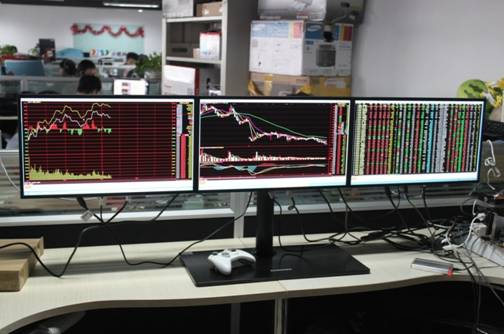

操盘手简介
正德管理公司是一个全方位的企业管理公司,公司以“正己正人、德行天下”为经营理念，立足邯郸,面向 全国。公司成立以来,已在全国各地发展了三十余家加盟合作公司,公司目前运作规模达到上亿元资金。公 司于2014年成立操盘手培训,开设股票、期货、期权交易等相关课程，从理论到实践,由浅入深，实盘教学 。来到正德，会让你学到真正的交易技术，会让你的投资改变你的人生。
讲师团队
平均8年的实战交易经验，3年的操盘手培训。操盘手团队管理经验，善于依据大盘指数分析市场特征，等待捕捉大周期系统性性情，以稳健的交易策略，成熟的资金管理，严格控制单笔交易风险，来赢取市场上的博弈。讲师团队致力于不同风险偏好的学习者提供不同的交易策略组合，以量化投资策略为核心，现已形成一套从基本面、行为金融、技术方面等多维度出发的多策略量化投资体系。覆盖套利策略、量化对冲策略、CTA策略等。
我们的优势
亮点一:30天授课，小班制，一年免费复训;面对面学习，全场互动，确保学员掌握每个知识点;全方位心里测试，精准学员交易定位，一对一开发专属交易系统，引才施教。
亮点二:盘中老师带学员实时分析，学员可以当场操作，体验盈利方法。
亮点三:跟踪式学习，实盘中全面落实，所学技术，随时解决学员在实盘交易中遇到的问题。
亮点四:100%自主知识产权，所有教材均由正德独立编制，10年操盘团队，实现应用交易系统。
亮点五:培训期间，公司为每位学员提供2万元期货资金账户，带学员实盘交易训练。
亮点六:通过结业考试后，学校推荐就业，扶持创业。
亮点七:就业渠道：（证券公司，期货公司，基金公司）具有从业资格证，正德合作的公司等金融相关机构。
公司环境

招生对象：1.年满18周岁 2.具备完全民事行为 3.无病史，身体健康，能独立思考！
课程安排
课程流程
- 1、基础理论
- 2、趋势交易体系
- 3、合格交易者养成训练
- 4、实训与风控管理
- 5、统一安排证券、期货、基金、理财规划师从业资格证
- 6、安排证券、期货、基金公司就业
课程列表
| 课程 | 理论课时 | 训练课时 | 类型 |
|---|---|---|---|
| 证券市场 | 5 | 0 | 理论 |
| 证券市场定位 | 2 | 0 | 理论 |
| 交易员定位 | 1 | 1 | 理论+实操 |
| 交易员盈利原理 | 2 | 0 | 理论+实操 |
| 交易基础 | 2 | 0 | 理论 |
| 技术分析理论基础 | 3 | 0 | 理论 |
| K线语言 | 2 | 2 | 理论+实操 |
| 技术分析工具应用 | 3 | 3 | 理论+实操 |
| 交易理论实战应用 | 2 | 4 | 理论+实操 |
| 形态转化实战应用 | 2 | 10 | 实操 |
| 趋势交易系统实战应用 | 4 | 10 | 理论+实操 |
| 交易级别判定实战应用 | 4 | 10 | 实操 |
| 交易心里学应用 | 1 | 2 | 理论+实操 |
| 形态学实战优化 | 4 | 10 | 理论+实操 |
| 持仓系统实战应该 | 2 | 10 | 理论+实操 |
| 资金管理实战应用 | 2 | 10 | 理论+实操 |
| 完整交易系统形成 | 4 | 20 | 理论+实操 |
| 合格交易员训练方法 | 0 | 30 | 实操 |
| 专属交易系统养成 | 4 | 30 | 理论+实操 |
| 复盘强化交易执行能力 | 0 | 40 | 实操 |
| 交易系统验证训练 | 0 | 40 | 实操 |
| 实盘交易训练 | 0 | 60 | 理论+实操 |
郑重承诺
我们将认真对待每一位学员，严格要求自己，尽职尽责，不遗余力地传授操盘知识，针对学员不同交易定位进行专业指导，小班授课，因材施教，严格要求，高标准管理，确保每一位学员能够真正学到一技之长。理论与实践相结合，理论引导，实盘教学，在学习中盈利，学成后推荐金融相关工作。名额有限报名从速
报名方式
公司电话：400-969-3996
公司电话2：0310-7677-461
简历投递邮箱：HBzhengdejinrong@163.com
简历投递邮箱：zhengdejinrong@sina.com
特别提醒：以上信息如有表明不明白之处，请联系客服或到公司咨询！